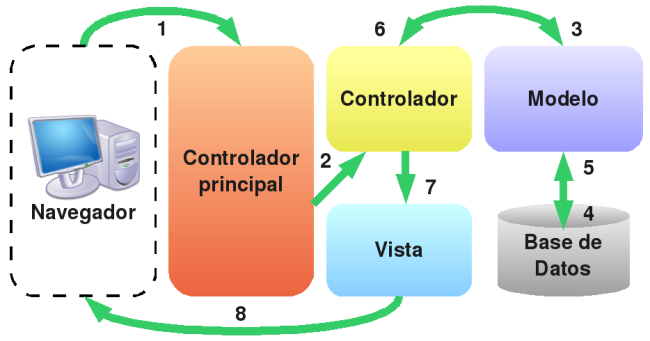

Ejemplo de cómo crear un sistema MVC paso a paso (1)
Para poder entender las ventajas de utilizar el patrón MVC, vamos a transformar un script PHP en una aplicación que sigue la arquitectura MVC. Un buen ejemplo para ilustrar esta explicación es el de mostrar una lista con todos los libros dados de alta en la base de datos del proyecto.
Programación simple - capas mezcladas (versión 1)
Fichero index.php
<html>
<head>
<title>LIBRERIA UAZON</title>
</head>
<body>
<h1>Libros dados de alta en nuestra libreria</h1>
<table border="1">
<tr>
<th>TITULO</th>
<th>PRECIO</th>
</tr>
<?php
$user='comprador';
$password = 'proweb2013';
$db = new PDO('mysql:host=localhost;dbname=uazon', $user, $password);
$result = $db->query('SELECT titulo, precio FROM libros');
while ($libro = $result->fetch())
{
?>
<tr>
<td><?php echo $libro['titulo']?></td>
<td><?php echo number_format($libro['precio'],2)?></td>
</tr>
<?php
}
?>
</table>
</body>
</html>
El script anterior es fácil de escribir y rápido de ejecutar, pero muy difícil de mantener y actualizar. Los principales problemas del código anterior son:
- No existe protección frente a errores (¿qué ocurre si falla la conexión con la base de datos?).
- El código HTML y el código PHP están mezclados en el mismo archivo e incluso en algunas partes están entrelazados.
Aquí vemos las capas entremezcladas en el código
**VISTA**
<html>
<head>
<title>LIBRERIA UAZON</title>
</head>
<body>
<h1>Libros dados de alta en nuestra libreria</h1>
<table border="1">
<tr>
<th>TITULO</th>
<th>PRECIO</th>
</tr>
**MODELO**
<?php
$db = new PDO('mysql:host=localhost;dbname=uazon', 'comprador', 'proweb2013');
$result = $db->query('SELECT titulo, precio FROM libros');
while ($libro = $result->fetch()) {
?>
**VISTA**
<tr>
<td><?php echo $libro['titulo']?></td>
<td><?php echo number_format($libro['precio'],2)?></td>
</tr>
<?php
}
?>
</table>
</body>
</html>
Problemas
Si quisiéramos presentar los mismos libros como RSS (otra vista) o PDF, deberíamos copiar también todo el bucle. Es, por supuesto, una duplicación del código responsable de la descarga de datos.
Intentemos ahora resolver los problemas identificados con ayuda del patrón MVC y separar el modelo de la vista.
El fragmento relacionado con la vista es fácil de separar en un fichero independiente. Podríamos incluir (include) el script correspondiente con la descripción del modo de presentación en función del equipo terminal en el cual vemos este servicio.
Lo primero es separar el código relacionado con el modelo del código relacionado con la vista.
En el fichero **index.php** movemos el modelo al inicio del fichero y la vista justo después.
<?php
$user = 'comprador';
$pwd = 'proweb2013';
$db = new PDO('mysql:host=localhost;dbname=uazon', $user, $pwd);
$result = $db->query('SELECT titulo, precio FROM libros');
$libros = array();
while ($libro = $result->fetch())
{
$libros[] = $libro;
}
?>
<html>
<head>
<title>LIBRERIA UAZON</title>
</head>
<body>
<h1>Libros dados de alta en nuestra libreria</h1>
<table border="1">
<tr>
<th>TITULO</th>
<th>PRECIO</th>
</tr>
<?php foreach ($libros as $libro): ?>
<tr>
<td><?php echo $libro['titulo'] ?></td>
<td><?php echo number_format($libro['precio'],2) ?></td>
</tr>
<?php endforeach; ?>
</table>
</body>
</html>
De esta forma procedemos como nos recomienda el patrón MVC. Primero obtenemos los datos del modelo y posteriormente lo pasamos a la vista. El código HTML de vista contiene cierto código PHP utilizando la sintaxis alternativa de PHP que es ideal para las plantillas. Más adelante hablaremos de lo que son plantillas pero suelen ser ficheros PHP que contienen código HTML entremezclado con código PHP (variables principalmente) y que se utilizan solamente para mostrar datos al usuario (Vista).
Una buena regla general para determinar si la parte de la vista está suficientemente limpia de código es que debería contener una cantidad mínima de código PHP, la suficiente como para que un diseñador HTML sin conocimientos de PHP pueda entenderla. Las instrucciones más comunes en la parte de la vista suelen ser **echo**, **if/endif**, **foreach/endforeach** y poco más. Además, no se deben incluir instrucciones PHP que generen etiquetas HTML.
Separando la manipulación de los datos de la presentación
Cuando tenemos separada claramente las capas que intervienen en el script, podemos realizar una separación aún mayor, una separación en ficheros. Vamos a crear un nuevo fichero **model.php** donde colocaremos todo lo relacionado con el acceso y descarga de los datos.
Código PHP del fichero: **model.php** (acceso a los datos)
<?php
$user = 'comprador';
$pwd = 'proweb2013';
$db = new PDO('mysql:host=localhost;dbname=uazon', $user, $pwd);
$result = $db->query('SELECT titulo, precio FROM libros');
$libros = array();
while ($libro = $result->fetch())
$libros[] = $libro;
?>
En la variable **$libros** tendremos un array multidimensional (en libros[0] tendremos libro['titulo'] y libro['precio']) con todos los libros contenidos en la tabla LIBROS.
Creamos otro fichero **view.php** donde incluir el código relacionado con la visualización de los libros.
Código PHP junto a código HTML del fichero: **view.php**
<html>
<head>
<title>LIBRERIA UAZON</title>
</head>
<body>
<h1>Libros dados de alta en nuestra libreria</h1>
<table border="1">
<tr>
<th>TITULO</th>
<th>PRECIO</th>
</tr>
<?php foreach ($libros as $libro): ?>
<tr>
<td><?php echo $libro['titulo']?></td>
<td><?php echo number_format($libro['precio'],2)?></td>
</tr>
<?php endforeach; ?>
</table>
</body>
</html>
Ya tenemos dos capas del patrón MVC: Modelo y Vista. Ahora nos faltaría crear una capa más que sería el controlador. Lo que dice el patrón es que la capa "**Controlador**" es la encargada de pasar los datos del modelo a la vista. Para ello crearemos un nuevo fichero PHP que **requiera** el modelo e **incluya** la vista.
Código PHP junto a código HTML del fichero: **controller.php**
<?php
//Se incluye el modelo
require 'model.php';
//En $libros tenemos un array con todos los libros gracias al modelo
//La vista recibe un array para mostrarlo por pantalla
include 'view.php';
?>
Como vemos toda la lógica se ha centralizado en el script del controlador, que solamente contiene código PHP y ningún tipo de HTML. De hecho el mismo controlador se puede reutilizar para otros tipos de presentaciones completamente diferentes, como por ejemplo un archivo PDF o un RSS.
Por último nos falta crear un controlador frontal que sea el punto de entrada a nuestra aplicación. Crearemos un nuevo fichero **index.php** (el que teníamos antes) que será el encargado de incluir el único controlador que hemos creado (controlador especifico para mostrar los datos de los libros dados de alta)
Código PHP del fichero: **index.php** (punto de entrada)
<?php
//Incluir variables de configuración y el único controlador
require 'controller.php';
?>
Mejorando el ejemplo anterior: MVC Versión 2
El ejemplo anterior está bien para un primer acercamiento, pero normalmente en cualquier aplicación necesitaremos realizar varias acciones sobre módulos distintos. Por ejemplo, para el proyecto de integración necesitaríamos ver los datos de un libro, añadir libros a una cesta, enviar un pedido, etc. Lo más normal es que necesitemos varios controladores y que cada controlador tenga varias acciones (ver, listar, borrar, etcétera). Para el proyecto de integración podríamos tener un controlador para los libros, un controlador para la cesta, un controlador para los usuarios, es decir, varios módulos (controladores) donde podemos realizar varias acciones sobre dichos módulos.
Para lograr todo esto, es necesario que automaticemos un poco el primer ejemplo para que admita, en principio, varios controladores y acciones. El patrón MVC nos recomienda dividir por capas nuestra aplicación. Para ello, lo que vamos a hacer es crear un estructura de carpetas donde alojar nuestras distintas capas: una carpeta para los modelos, una carpeta para las vistas y una carpeta para los distintos controladores. Dentro de cada carpeta metemos los distintos ficheros que hemos creado y que corresponden con cada capa del patrón. De esta forma todo queda mucho más ordenado y sencillo de entender.
Tendremos una carpeta para los controladores, otra para los modelos y otra las vistas. Tendríamos un estructura tal que así:
controllers/
................controller.php
models/
................model.php
views/
................listar.php
index.php
Siendo el fichero **index.php** el punto de entrada a la aplicación (controlador frontal).
Otra de las siguientes medidas es renombrar los ficheros relacionados con el módulo, es decir, todos los ficheros controller.php, model.php y view.php están relacionados con el módulo de libros, por lo que, renombramos cada fichero anteponiendo el nombre del módulo a dicho fichero. De esta forma cada fichero está relacionado con su módulo y le será mucho más fácil al controlador frontal encontrar el módulo a cargar según la acción solicitada por el usuario. Finalmente, el fichero **controller.php** pasará a llamarse **libros_controller.php**, **model.php** se llamará **libros_model.php**. El fichero view.php muestra un listado de todos los libros por lo que lo renombramos por un nombre más explicativo. Pasará a llamarse **libros_listar.php**. Las vistas normalmente sólo tienen una acción por fichero, es decir, que mientras que sólo tenemos un fichero para el controlador de libros con varias acciones (ver, listar, etc.) cada acción tiene asociada un fichero por vista (listar.php, ver.php, login.php, etc).
La estructura de ficheros y directorios quedaría de la siguiente forma:
controllers/
................libros_controller.php
models/
................libros_model.php
views/
................libros_listar.php
index.php
Mejorando el modelo
Lo que contiene la capa modelo es prácticamente similar al patrón DAO que vimos en capítulo de introducción a los patrones. Vamos a dejarlo así para no añadir más complicación a este ejemplo. Dentro del modelo creamos dos funciones getConnection() que devolverá la conexión con la base de datos y la función getLibros() que devuelve una array de libros.
Este sería el código del fichero libros_model.php:
<?php
function getConnection() {
$user = 'comprador';
$pwd = 'proweb2013';
return new PDO('mysql:host=localhost;dbname=uazon', $user, $pwd);
}
function getLibros() {
$db = getConnection();
$result = $db->query('SELECT titulo, precio FROM libros');
$libros = array();
while ( $libro = $result->fetch() )
$libros[] = $libro;
return $libros;
}
?>
Controlador específico de libros
El patrón MVC nos dice que el controlador es el encargado de según la petición de un usuario, obtener los datos del modelo y pasarlos a la vista. ¿Cómo se hace eso? Sencillamente mediante la URL que el usuario introduce o pincha o accede a través de un formulario, etc.
En un proyecto sin el patrón MVC (por ejemplo el proyecto realizado hasta el momento) lo que se suelen tener son ficheros PHP cuyo nombre nos da información de lo que realizan o contienen. Por ejemplo, **libros_ficha.php** es un script que realiza la **acción** de **ver/mostrar** los datos de un libro. O el script **pedidos.php** incluye varias acciones como son la de **listar** todos los pedidos del usuario o **añadir/borrar** libros si envían además un identificador de un libro en la URL (GET). Resumiendo, si tenemos un controlador especifico para el módulo de libros tendremos que incluir todas esas acciones relacionadas con los libros dentro de ese controlador: ver, listar, etc.
Normalmente las acciones son funciones/métodos cuyo nombre explica su funcionalidad, por lo que suele ser un verbo en infinitivo (como por ejemplo ver, listar, modificar, etc.). Con este tipo de nombres, no son necesarios demasiados comentarios para explicar la funcionalidad de la acción y el código fuente resultante es mucho más fácil de comprender.
Si el usuario quiere ver los datos de un libro ¿Cómo procederá? Le mostraremos un enlace que seleccione el módulo libros y la acción ver. Algo así: **index.php**?**controller**=libros&**action**=ver
Como vemos, las URL determina el módulo y la acción a ejecutar. El controlador frontal (index.php) es el encargado de averiguar que **controlador** cargar y ejecutar la **acción **solicitada por el usuario, incluyendo los archivos de configuración necesarios y demás.
A partir de ahora, todos los accesos a nuestro sistema serán por medio de index.php y las URL serán similares a las siguientes:
index.php?controller=libros&action=listar
- Carga controlador de libros (libros_controller) y llama a la acción listar
index.php?controller=libros&action=ver&id=1
- Carga el controlador de libros, obtiene el libro con id=1 y pasa los datos del mismo a dicho controlador para que lo pinte en la plantilla adecuada.
index.php?controller=pedidos&action=listar
- Carga controlador de pedidos (pedidos_controller) y llama a la acción (action) listar.
index.php?controller=pedidos&action=ver&id=70
- Carga controlador de pedidos, obtiene el pedido con id igual a 70 y pasa los datos del mismo a dicho controlador para que lo pinte en la plantilla adecuada
Añadimos la acción listar libros:
- Requerimos la capa modelo
- Obtenemos los libros de dicha capa modelo
- Le "pasamos" los libros a la capa vista
Incluimos el siguiente código al fichero **libros_controller.php**
<?php
function listar ()
{
//Incluye el modelo que corresponde
require 'models/libros_model.php';
//Le pide al modelo todos los libros
$libros = getLibros();
//Pasa a la vista toda la información que se desea representar
include 'views/libros_listar.php';
}
?>
Patrón FrontController - controlador Frontal
Es un patrón de diseño que se basa en usar un controlador como punto inicial para la gestión de las peticiones. El controlador gestiona estas peticiones, y realiza algunas funciones como: comprobación de restricciones de seguridad, manejo de errores, mapear y delegación de las peticiones al controlador específico que se encargará de generar la vista adecuada para el usuario.La siguiente figura muestra un esquema de ello:

En definitiva este patrón consiste en utilizar un único punto de entrada a nuestra aplicación redirigiendo las peticiones de los usuarios al/los controladores específicos. Por último destacar que este patrón suele invocarse desde el fichero index.php ya que es el punto de entrada por defecto de todas las aplicaciones web.
ControladorFrontal - index.php
Vamos a añadir el siguiente código al controlador frontal (**index.php**) para que interprete la URL y llame al **controlador** adecuado y la **acción** correspondiente.
Mejoras en el controlador (parte 1)
Definir tres constantes:
- Constante para definir la carpeta donde se encuentran los controladores:
- DEFINE ('CONTROLLERS_FOLDER', );
Definimos el controlador por defecto por si el usuario no introduce uno o accede al fichero index.php:
- DEFINE ('DEFAULT_CONTROLLER', );
Definimos la acción a ejecutar por defecto por si el usuario no introduce ninguna o accede al fichero index.php:
- DEFINE ('DEFAULT_ACTION', );
- Constante para definir la carpeta donde se encuentran los controladores:
Obtener el controlador a cargar desde la URL:
Utilizando la función empty() (determina si una variable es considerada como vacía) comprobamos si la variable " controller" existe en el array GET:
- if ( !empty($_GET[ 'controller' ] ) )
Nos guardamos el contenido de $_GET [ 'controller' ] en la variable $controller.
- $controller = $_GET [ 'controller' ];
Si el usuario no ha introducido un controlador cargamos el de por defecto: libros
- $controller = DEFAULT_CONTROLLER;
Obtener la acción a ejecutar desde la URL:
Utilizando la función empty() comprobamos si la variable "action" existe en el array GET:
if ( !empty($_GET['action'] ) )
Nos guardamos el contenido de $_GET [ 'action' ] en la variable $action.
- $action=$_GET [ 'action' ];
Si el usuario no ha introducido una acción a través de la URL cargamos la de por defecto: listar
- $action=DEFAULT_ACTION;
Veamos ahora el código a introducir en la primera parte del fichero ** index.php:**
<?php
//La carpeta donde buscaremos los controladores
define ('CONTROLLERS_FOLDER', "controllers/");
//Si no se indica un controlador, este es el controlador que se usará
define ('DEFAULT_CONTROLLER', "libros");
//Si no se indica una acción, esta acción es la que se usará
define ('DEFAULT_ACTION', "listar");
//Obtenemos el controlador.
//Si el usuario no lo introduce, seleccionamos el de por defecto.
$controller = DEFAULT_CONTROLLER;
if ( !empty ( $_GET[ 'controller' ] ) )
$controller = $_GET [ 'controller' ];
$action = DEFAULT_ACTION;
// Obtenemos la acción seleccionada.
// Si el usuario no la introduce, seleccionamos la de por defecto.
if ( !empty ( $_GET [ 'action' ] ) )
$action = $_GET [ 'action' ];
Mejorando el controlador parte 2:
Construimos el fichero controlador:
- $controller=CONTROLLERS_FOLDER.$controller.'_controller.php';
Comprobamos si el controlador es un archivo (función is_file() )
if (is_file($controller) )
Se es un archivo lo requerimos:
- require_once ($controller);
Sino, mostramos un mensaje de error deteniendo el script:
- die ('El controlador no existe - 404 not found');
Comprobamos si la variable $action es una función-variable:
if (is_callable($action) )
Si es así invocamos la función:
- $action();
Si no, mostramos un mensaje de error deteniendo el script:
Concepto de función-variable. Significa que si una variable tiene paréntesis anexos a él, PHP buscará una función con el mismo nombre e intentará ejecutarla. Más información en el manual de PHP: http://es.php.net/manual/es/functions.variable-functions.php
Veamos ahora la segunda parte del código a introducir en el fichero **index.php:**
//Ya tenemos el controlador y la accion
//Formamos el nombre del fichero que contiene nuestro controlador
$controller = CONTROLLERS_FOLDER . $controller . '_controller.php';
//Si la variable $controller es un fichero lo requerimos
try
{
if ( is_file ( $controller ) )
require_once ($controller);
else
throw new Exception ('El controlador no existe - 404 not found');
//Si la variable $action es una funcion la ejecutamos o detenemos el script
if ( is_callable ($action) )
$action();
else
throw new Exception ('La accion no existe - 404 not found');
?>
Añadir una nueva acción al controlador de libros (ver un libro)
**Actualizar el Modelo**
Lo primero que vamos a hacer es añadir en el modelo una función que nos devuelva un libro según el identificador que pasamos como parámetro. Dicha función se llamará, por ejemplo, getLibro().
En el fichero **libros_model.php** añadimos el código que nos devuelve el libro
...
function getLibro($id)
{
$db = getConnection();
$query = 'SELECT * FROM libros WHERE id = ?';
$stmt = $db->prepare($query);
$stmt->execute(array($id));
$libro = $stmt->fetch();
return $libro;
}
...
**Actualizar el Controlador**
Ahora añadimos la acción **ver()** en el controlador de libros. En el fichero **libros_controller.php** añadimos el código que nos devuelve el libro:
...
function ver ()
{
if ( !isset ( $_GET [ 'id' ] ) )
die("No has especificado un identificador de libro.");
$id = $_GET [ 'id' ];
//Incluimos el modelo correspondiente
require 'models/libros_model.php';
//Le pide al modelo el libro con id = $id
$libro = getLibro($id);
if ($libro === null)
die("Identificador de libro incorrecto");
//Pasamos a la vista toda la información que se desea representar
include('views/libros_ver.php');
}
...
**Crear la vista**
Ahora creamos una nueva vista que contendrá los datos del libro. La plantilla se llamará **libros_ver.php **
Este sería el código:
<html>
<head>
<title>LIBRERIA UAZON</title>
</head>
<body>
<h1>Ver datos de un libro</h1>
<table border="1">
<tr>
<th>TITULO</th>
<th>PRECIO</th>
</tr>
<tr>
<td><?php echo $libro['titulo'] ?></td>
<td><?php echo number_format($libro['precio'],2)?></td>
</tr>
</table>
</body>
</html>
Finalmente el controlador frontal index.php:
<?php
//La carpeta donde buscaremos los controladores
define ('CONTROLLERS_FOLDER', "controllers/");
//Si no se indica un controlador, este es el controlador que se usará
define ('DEFAULT_CONTROLLER', "libros");
//Si no se indica una acción, esta acción es la que se usará
define ('DEFAULT_ACTION', "listar");
//Obtenemos el controlador.
//Si el usuario no lo introduce, seleccionamos el de por defecto.
$controller = DEFAULT_CONTROLLER;
if ( !empty ( $_GET[ 'controller' ] ) )
$controller = $_GET [ 'controller' ];
$action = DEFAULT_ACTION;
// Obtenemos la acción seleccionada.
// Si el usuario no la introduce, seleccionamos la de por defecto.
if ( !empty ( $_GET [ 'action' ] ) )
$action = $_GET [ 'action' ];
//Ya tenemos el controlador y la accion
//Formamos el nombre del fichero que contiene nuestro controlador
$controller = CONTROLLERS_FOLDER . $controller . '_controller.php';
//Si la variable ($controller) es un fichero lo requerimos
if ( is_file ( $controller ) )
require_once ($controller)
else
die ('El controlador no existe - 404 not found');
//Si la variable $action es una función la ejecutamos o detenemos el script
if ( is_callable ($action) )
$action();
else
die ('La accion no existe - 404 not found');
Este ejemplo sencillo es una pequeña introducción a la estructura del patrón MVC. Hemos separado en 3 capas la aplicación y hemos definido un punto de entrada común para la misma usando programación estructurada/funcional.
Uno de los grandes problemas que tiene este "mini-framework" es que no hace uso de la potencia que nos aporta la programación orientada a objetos respecto a la reutilización y extensión de funcionalidades de dicho framework.